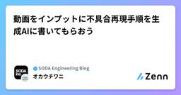

SODA Engineering Blogのフィード
https://zenn.dev/p/team_soda
株式会社SODAの開発組織がお届けするZenn Publicationです。 是非Entrance Bookもご覧ください！ → https://recruit.soda-inc.jp/engineer
フィード

動画をインプットに不具合再現手順を生成AIに書いてもらおう
SODA Engineering Blogのフィード
こんにちは、SODAでクオリティエンジニアをしているokauchiです。今回は不具合再現手順を生成AIの力を借りて楽に書こうというテーマです。自分が目に届く範囲のチームであればまだ再現手順の確認、レビューをすることが出来ますが、組織全体となった場合、確認が困難になっていきます。その中ではガイドラインを作成することが求められるのですが、ガイドラインを整備しても、解釈違いやどうしても他の業務より劣後されて、メモレベルの記述になってしまうこともありえます。それを防ぐためのアプローチとして有効そうです！ 不具合報告の「ばらつき」が生まれる理由プロダクトの品質保証を担っていると、開発・サ...
5日前

GitHub Self-hostedに移行しました。CIが最大55%速くなり、月額が300万円節約できた！
SODA Engineering Blogのフィード
こんにちは、SODAのSREチームのDucと申します。GitHub Actionsのコストを削減しながらCIワークフローを高速化したの工夫をご紹介します。 背景私たちのチームは、snkrdunk.comサイトとSNKRDUNKモバイルアプリの可用性とパフォーマンスの維持に注力しています。それに加えて、クラウドインフラストラクチャやその他の監視・開発ツールのコスト管理も担当しています。毎月、AWSやGitHubなどのインフラストラクチャとツールの請求書をチェックしています。GitHubの請求額が非常に高いことに気づきました。特にGitHub Actionsの部分です。参考ま...
12日前
生成AIにFAQを作ってもらって、提案を通しやすくしよう
SODA Engineering Blogのフィード
こんにちは、SODAでクオリティエンジニアをしているokauchiです。今回は提案の質を生成AIで上げてみようというテーマです。新しいプロセスを導入したいと提案はするものの、鋭い指摘をされて思わず提案を引っ込めてしまったことってありませんか？解決したい課題があってそれをなんとかしたい思いはとてもステキなんですが、残念ながら中身が伴っていないためにスムーズに話が進まない。厄介なのは自分では「これで大丈夫だろう、十分に練りきれた話だろう」と思ってしまうことですね。 提案が通らないのは「解像度の差」かもしれないエンジニアとして開発に携わっていると、新しいツールやプロセスの導入を提案し...
12日前
AIアプリを陰で支える通信プロトコル「SSE」を学びましょう
SODA Engineering Blogのフィード
What?サーバ送信イベント（SSE）という通信プロトコルがあります。このSSEが、MCPやLLMチャットなどのAIアプリの通信プロトコルとして採用されています。本記事ではSSEとは何か？ AIアプリにおいてどのように使われているのか？ を概説します。 ゴールサーバからクライアントへの通信の世界に触れるSSEの概念と基本的な使い方を理解する（Go, JS, Flutter）SSEの利用例としてのAIチャットアプリとMCPサーバを学ぶ デモAIチャットアプリで、AIからの回答をストリーム表示するのにSSEを使っています。サーバがLLMからの回答をストリームとして...
18日前
GitHub Self-hosted Runners - 54% faster CI with just 13% of the cost
SODA Engineering Blogのフィード
Hi, I'm Duc, a member of SODA's SRE team.Here is how we speed up our CI workflows while also reducing the cost of GitHub Actions. BackgroundOur team focuses on maintaining the availability and performance of the snkrdunk.com website and the SNKRDUNK application.Besides that, we are also resp...
18日前
気持ちも定量化するとオーバーヘッドがなくなりそう
SODA Engineering Blogのフィード
こんにちは、SODAでクオリティエンジニアをしているokauchiです。今回は気持ちの定量化というテーマです！言葉の受け取り方次第で伝えたことよりインパクトが大きく伝わってしまって周りを驚かせてしまったり、逆に小さく伝わって真剣に向き合ってもらえなかったり。どちらも悪気はなかったとしてもすり合わせが起こらないとコミュニケーションがなくなってしまうこともあり得ます。それを解決するTipsのご紹介です！ 不安や心配という「ふわっとした感情」がKPTで出てきたときKPT（Keep, Problem, Try）の振り返りで、「新しい技術にチャレンジするので不安」「デグレが起こらないか心配...
20日前
PdMがCursorと二人三脚で1日1PR出すようになった話
SODA Engineering Blogのフィード
はじめまして、株式会社SODAでPdMをしている辛いものが好きなmyo3mです！ 3月頭から少しずつ機能開発にトライする機会を作っています。SODAでもCursorが導入されたことで学習のスピードがあがり、最近では1日1PR出せるようになったので今回はその成果を報告します💪 ちなみにこの文章はAqua Voiceとともに書いています💡SODAでは #dev-cursor / #dev-claude-code / #dev-devinというチャンネルがあり、日々そこでAIを活用した開発について最新情報の共有がされていますさてここで問題です。私がコードを書き始めた理由は何でしょう？👀...
25日前
プロセスが腐敗していないか、匂いに敏感になろう
SODA Engineering Blogのフィード
こんにちは、SODAでクオリティエンジニアをしているokauchiです。ソフトウェア開発において「プロセスの腐敗臭」に気づけるかどうかは、品質の維持・向上に直結する重要な視点です。ここで言う「匂い」とは「なんだかうまくいっていない気がする」「この手順、昔は意味があったけど今は形骸化しているのでは？」という違和感のこと。今回は、プロセスの変化に対して敏感であることの大切さを考えてみたいと思います。 昔は有効だったプロセスが、今もそうとは限らないある課題に対して導入したプロセスが非常に効果を発揮し、定着していくということがあります。たとえば「毎朝の定例ミーティング」や「チェックリスト...
1ヶ月前
スマホとDevinで始める旅行駆動開発（旅行記あり）
SODA Engineering Blogのフィード
背景旅行好きのITエンジニアなら誰でも出先で開発をしたいと思ったことがあるだろう。旅行は何かと待ち時間が発生するので、そこに好きなアクティビティをねじ込むことが旅行の醍醐味の一つなのである。しかしPCを旅行中に持ち歩くのは何かとしんどい。そこで、スマホだけで開発できないかを考えてみた。結果、Devinという解に辿り着いた。DevinにSlack上で指示するだけで開発ができればノートPCを持ち歩く必要がなくなるのでは？この記事は本当にスマホ&Devinだけで開発可能かどうか、2泊3日の旅行で実際に試してみたレポートである。（茶番を多く含むので、結論だけ知りたい方はまと...
1ヶ月前
多元的無知をQAエンジニアの業務で考えてみる
SODA Engineering Blogのフィード
こんにちは。SODAでクオリティエンジニアをやっているokauchiです。多元的無知という言葉を知りました。「他の誰かは分かっているはず」と思い込み、自分の疑問や違和感を黙ってしまう心理現象です。自分がわかっていないだけならまだしも（もちろん良くはありませんが）、チーム全体で「誰かが理解しているだろう」と思い込み、実は誰も正しく把握していなかった、ということも起こりえます。とくにQAエンジニアの業務においても見過ごせない問題です。QAエンジニアの視点から多元的無知が引き起こすリスクと、それを防ぐための方法を考えてみます。 テストの現場に潜む多元的無知のリスクQAエンジニアはテスト...
1ヶ月前
[Frontend Replace] インフラ設計篇
SODA Engineering Blogのフィード
こんにちは。FE チームの MiyukiP です。これまでFrontendリプレイスプロジェクトのエコシステムやアーキテクチャについてお伝えしました。本稿では、それらを配信するインフラや開発環境について紹介していきます。 前提元々、スニーカーダンクはFrontend/API一体のモノリスをECSの単一serviceにデプロイして、ユーザーに配信していました。今回のリプレイスにあたって、従来のserver serviceの他に、新たにfrontend serviceを作成して、そのservice内の前段にNginxをリバースプロキシとして設置して、段階的なページごとのリプレイス...
1ヶ月前
[Frontend Replace] アーキテクチャ設計篇
SODA Engineering Blogのフィード
こんにちは。FE チームの Maple です。前回の記事「[FrontEnd Replace] エコシステム設計篇」では、私たちが選択した技術スタックについてお伝えしました。Next.js、bun、CSS Modules、Storybook など、数々の選択肢から厳選したツール群により、開発効率の飛躍的な向上を実現できました。しかし、優れた技術スタックを選んだだけでは、真の開発生産性は手に入りません。それらをどう組み合わせ、どう構造化するか——つまり「アーキテクチャ設計」こそが、長期的な開発効率と保守性を決定する最重要要素なのです。今回は、私たちが何度もの議論と試行錯誤を経て辿り着...
1ヶ月前
CodexでFlutterのテストを自動生成する
SODA Engineering Blogのフィード
はじめにFlutter 開発では Widget テスト と ゴールデンテスト が品質確保の鍵を握りますが、手作業で書くには時間がかかります。そこで注目したのが OpenAI Codex です。Codex はChatGPTのようなインターフェースで自然言語でコーディング作業を処理できるAIエージェントです。本記事では、Codex を利用して Flutter プロジェクトのテストコードを自動生成した実体験を共有し、得られたメリット・課題・ベストプラクティスをまとめます。ここでお話しする内容は、あくまで私個人の経験に基づいたものであり、私が所属する組織の公式な見解や実験結果ではありませ...
2ヶ月前
Athenaを活用してログ調査コストを98%削減した話 ($1,552→$32)
SODA Engineering Blogのフィード
ログ監視・分析サービスを用いた過去ログ調査では、時にそのコストが大きな課題となります。本記事では、あるケースにおいて$1,500以上と見込まれた過去ログ調査の費用を、Amazon Athenaの活用により$32まで大幅削減（98%カット）した実際の事例をご紹介します。具体的なコスト試算やAthena導入から運用上の注意点まで、コスト効率の高いログ調査の実現に向けた事例として参考になれば幸いです。 背景：snkrdunk.comのログ調査における課題弊社SODAでは、アプリケーションやインフラのログ監視・分析にDatadogを利用しています。Datadogは非常に高機能で便利なサ...
2ヶ月前
AI x FlutterでリアルタイムにUIを生成する
SODA Engineering Blogのフィード
!こちらは、5月9日にSODAオフィスで開催されたオフライン勉強会、SODA Flutter Talk #2での登壇内容を記事化したものですスニダンを開発している@natsuk4zeです！今回は生成UIというリアルタイムにUIを生成する技術を、Flutterで試してきたので、ご紹介します✨GitHubもぜひフォーローお願いします！https://github.com/natsuk4ze デモ動画今回はこのようなデモを用意してみました。ローティングを挟んだ後に表示される沖縄に関する画面は丸ごとAIが生成しています。!画像は著作権フリーのものに置き換えています。...
2ヶ月前
Material Design3の進化形、Material 3 Expressiveを追いかける
SODA Engineering Blogのフィード
2025年5月13日にGoogleがMaterial 3 Expressiveが発表されました。こちらはMaterial Design3の進化形に位置します。この記事ではMaterial 3 Expressiveとはなにか、どんなところが変わったのかをまとめています。 Material 3 Expressiveとは?Expressiveとはそのまま翻訳すると「表現力豊かな」となります。つまりMaterial Design3をより感情に訴えかけるUXにしたのがMaterial 3 Expressiveの位置付けです。前述した通り、Material Design4ではなく、あくまで...
2ヶ月前
[Frontend Replace] エコシステム設計篇
SODA Engineering Blogのフィード
こんにちは。FE チームの Maple です。あなたは今、フロントエンド開発の迷宮で道に迷っていませんか？ライブラリの選定、アーキテクチャ設計、テスト戦略...様々な選択肢に囲まれ、何を選べば良いのか頭を抱えていることでしょう。私たちのチームは、まさにそんな迷宮を抜け出すための"地図"を手に入れました。今回は、私たちが新しいフロントエンド環境の刷新にあたって辿り着いた、理想的なエコシステム設計についてお伝えします。 なぜエコシステム設計が重要なのかフロントエンド開発は、単に React や Vue といったフレームワークを選ぶだけでは終わりません。真の開発効率と持続可能性は、...
2ヶ月前
GASでMagicPodにアップロードされた複数のアプリを削除する
SODA Engineering Blogのフィード
こんにちは。SODAでクオリティエンジニアをやっているokauchiです。今回はMagicPodにアップロードされたアプリをUIに頼らずGASで削除するというテーマになります！紹介するのはモバイルアプリ版ですが、Web版も似たような仕組みで実装できるかもしれません。以下のGASを作成しようfunction deleteMagicPodFilesFromSheet() { // 設定 const API_KEY = 'YOUR_API_KEY'; // ← ここに取得したAPIキーを入力 const ORGANIZATION_NAME = "YOUR_ORGANIZAT...
3ヶ月前
AIで大規模ライブラリ移行を完遂させるテクニック
SODA Engineering Blogのフィード
一行まとめ最初に諸々の手続き・ルール・注意点を含んだプロンプトを完成させて、記憶がない（新規スレッド）の状態からでも期待するアウトプットが出る状態にする 補足技術的負債脱却など諸々の目的でライブラリ移行を行うことがしばしばあるが、そのライブラリが大規模なプロジェクト全体で使われているような場合は、広範囲にわたる変更が必要になる。人間の手を入れるのはデグレのリスクが高まる一方でその多くは単純な置換であることから、AIに作業させることで、理想的にはミスは減るし、人間はより高度なタスクに集中できる。しかしAIに適当なプロンプトを投げると間違った変更を加える可能性があり、結局は人...
3ヶ月前
CTOやめました
SODA Engineering Blogのフィード
執行役員 CTO を辞任し、VP of Technology として再出発します2025 年 4 月より、僕は株式会社 SODA の執行役員 CTO を辞任し、開発部署のマネージャーとして VP of Technology（VPoT）という役割に専念することを選びました。まずは自ら代表に相談し、その後経営会議での議論を経て決定しました。 自分の強みをもっと活かし、伸ばすことに時間を使うこの決断の背景は単純です。自分の強みをもっと活かし、伸ばすことに時間を使ったほうが会社の成長に貢献できると考えたからです。執行役員として過ごした時間は非常に貴重で学びの多いものでした。しかし、...
3ヶ月前